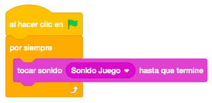
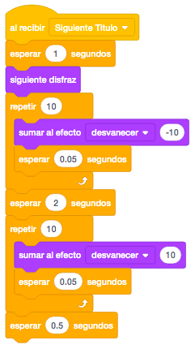
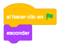
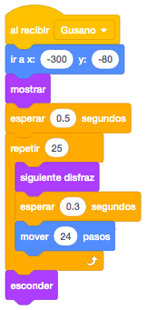
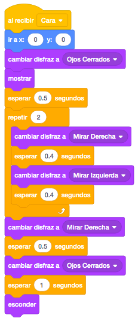
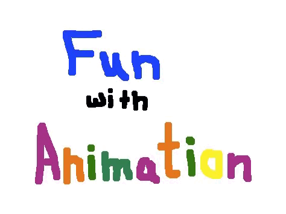

Necesitaremos un objeto con diferentes textos de los distintos objetos que iremos animando.
También utilizaremos un gusano, un pájaro y una cara.
Tendremos un escenario en blanco para que se vean bien las animaciones..
Para descargar los objetos necesarios para el juego, lo haremos desde este link. Es un archivo comprimido con 4 objetos y 1 sonido. Lo descargaremos y lo descomprimimos en el directorio del alumno.
La herramienta de Scratch también se puede utilizar para contar historias.
En esta ocasión haremos que nos vaya mostrando los distintos animales y textos, cambiando de disfraces.
Empezaremos con los títulos. Lo posicionaremos en el centro de la pantalla, pondremos el primer disfraz y
quitaremos los efectos, ya que posteriormente le pondremos alguno.
Vamos a hacer un efecto de película antigua con el texto, moviéndolo un poco continuamente. Para ello, vamos
a moverlo tanto en la coordenada X como en la Y un número aleatorio entre 0 y 1.

Ahora vamos a programar el escenario, que en este caso será el que lleve toda la lógica del programa.
Añadiremos el sonido descargado al escenario y lo reproduciremos continuamente.

Programaremos la lógica de la historia mediante mensajes. La secuencia será:
- Siguiente Título
- Gusano
- Siguiente Título
- Pájaro
- Siguiente Título
- Cara
- Fin
Al final detendremos todo. Llamaremos a cada uno de los mensajes y esperaremos a que acaben para llamar al
siguiente.

Vamos a seguir programando el objeto de los títulos. Crearemos el evento "Al Recibir" con el mensaje
"Siguiente Título".
En este mensaje lo que haremos será esperar 1 segundo para empezar y cambiar el disfraz, repetir 10 veces
que vaya apareciendo con el efecto "Desvanecer" (en negativo) con el tiempo de espera suficiente para que se
aprecie, esperaremos unos segundos y volveremos a repetir para desvanecer (en positivo) el objeto poco a
poco.

Para programar los objetos gusano, pájaro y cara, serán muy parecidos. Primero esconderemos los objetos al hacer click en la bandera.

En el gusano programaremos el mensaje "Gusano, en el pájaro el "Pájaro" y en la cara "Cara".
En el mensaje "Gusano", posicionaremos el objeto en la parte inferior izquierda y lo mostraremos.
Después iremos cambiando de disfraz y moviéndolo hacia la derecha hasta que llegue al final, para finalmente
esconderlo.

En el pájaro haremos lo mismo, posicionándolo en la parte superior y moviéndolo las veces necesarias.
La cara será un poco distinta ya que primero aparecerá con los ojos cerrados, luego mirará hacia un lado y
hacia el otro varias veces y terminará con los ojos cerrados.

Finalmente programaremos en el objeto "Título" el mensaje "Fin". En él cambiaremos este objeto al disfraz "Fin" y lo mostraremos poco a poco con el efecto "Desvanecer".
Si no ha quedado muy claro el tema de las animaciones, podemos contar la historia que más nos guste y seguir practicando.
Y el juego quedaría así.

Para ver el juego terminado pulsa
aquí.
Para descargarte el juego terminado pulsa
aquí.